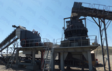
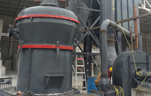
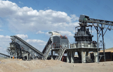
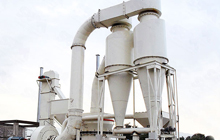
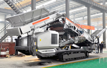
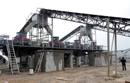
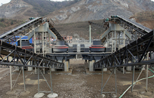
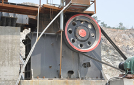
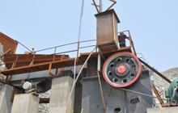
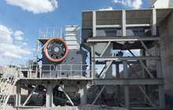

SANDMAKER is a global company with raymond mill products sold to more than 70 countries in the world. Raymond mill machine euipments would satisfy you with high quality and professional service.
Quarry crusher equipment production line equipment used jaw crusher, impact crusher and cone crusher. Large quarry recommend quarry stone crusher machine equipment.
The effect of artificial sand production mainly related to the selection of sand making machine and sand making process, to get a good artificial sand.
As one of the leader mining and construction equipment manufacturer in China, SANDMAKER Machinery has participated in many turnkey plant in Asia countries.
Since the establishment, our company has regarded " All is for clients" as its service goal and has provided high-quality, high-taste, high-efficient and all-around-way service for its clients.
Raymond Mill Technical Support
Supply the most current design and technical expertise; Supply parts sales and training service far beyond the initial sale; Protect your profits with quality parts and expert service.
Raymond Mill Plant
The crushing, screening, washing, grinding equipment in stationary, portable, tracked type is available. stone crusher machine, gold iron ore, sand making, coal crushing, aggregate.
Sand Making Equipment

Efficient use of quarry crusher
Quarry crusher equipment production line equipment used jaw crusher...

Raymond mill manufacturer
For the purchase of the raymond mill should be more important...

Quarry crusher process
Quarry crusher equipment through rational allocation modeling...

Vertical Roller Mill Operation
Vertical roller mill is a energy saving technologies equipment...

Mobile crusher station
Mobile crusher sale for its flexibility favored by the general customers...

Sand making machine
Sand making machine equipment belonging in our infancy stage...

Sand making machine costs
Sand making machine fully tap the resource costs and benefits...

Crusher machine performance
The latest domestic machinery industry data show that domestic...

Stone crusher equipment
Stone crusher is also called rock stone crusher, is a kind of...

Efficient jaw crusher machine
With the rapid economic development in the engineering crushing process...
About Raymond Mill
Raymond Mill plays an irreplaceable role in a variety of ore crushing, and is currently the most effective, practical and reliable sand making equipment. In the social and user needs, our professional and technical personnel combined with the international advanced level, the design and production of a new generation of Sand, and a new generation of Sand tend to improve sexual performance.
SANDMAKER granite processing plants have everything on board: feeders, crusher, screen, and power installation with simple and robust construction for high availability.--- Pine Jack, Manager
SANDMAKER crusher machine have modular components for easy replacement and durable wear parts for less downtime.--- CJ. Watson, Director
We have decided to increase the purchasing of SANDMAKER Machinery as it chases what it says is highly efficient and environmental friendly. --- Michael Bell, Author
Escondida's proved and probable reserves are currently 3,900Mt, HPC cone crusher is a key equipment for the copper ore beneficiation plant to achieve the goal.--- Jame Green, Doctor